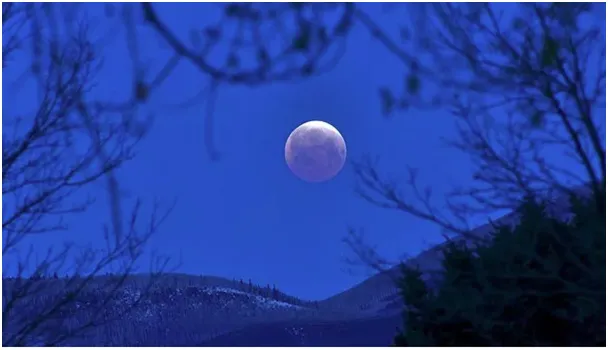

Pełnia z Judaszem w tle.
Wielki Czwartek 2022.
PPiękna pełnia dziś! Czy zauważyliście, że pełnia Księżyca od dłuższego czasu jest zawsze w czwartek? Tak musi być, bo tydzień ma 7 dni a księżycowy miesiąc dni prawie dokładnie 28, czyli 4 tygodnie dają pełen cykl. Lud pasterski Żydów obchodził swoje święta wg. kalendarza księżycowego, łacińska Europa też opiera się o system lunarny. Według Słońca żyją Persowie, ale to inna historia. Żydzi, często nomadzi, żyjąc w rozproszeniu spotykali się raz w roku w Jerozolimie, w jedynej prawdziwiej świątyni. Skąd wiedzieli, kiedy tam być, pasąc swe stada na pustkowiach? System jest prosty i nasz kalendarz liturgiczny jest jego kontynuacją. Bardzo łatwo zaobserwować dzień równonocy. To jest ok. 21 marca, gdy Słońce wstaje dokładnie na wschodzie i zachodzi dokładnie na zachodzie, czyli linia prosta łączy oba te punkty i przechodzi przez obserwatora. To działa na całej ziemi, pisałem o tym kilka postów wcześniej, 21 marca.

Wracamy do Kanaanu. Kalendarz żydowski mówi, że Pascha jest w 14 dniu miesiąca Nissan zaczynającego się od równonocy. Miesiące były oparte o cyk księżycowy, wypadało to równe 2 tygodnie po nowiu czyli w pełnię. W pierwszą pełnię po równonocy. Wystarczyło obserwować księżyc po równonocy, aby wiedzieć, kiedy udać się do Jerozolimy. Stąd w Ogrójcu (nie mylić z Grójcem!) widzimy Zbawiciela na tle księżycowej tarczy. Czy wiecie, że przy braku świateł elektrycznych w taką jasną pełnię nie sposób poznać lub zapamiętać twarzy człowieka widzianą w nocy w księżycowym świetle ? Czy dlatego Judasz musiał wymienić pozdrowienie z Chrystusem, aby być pewnym? Łatwiej byłoby wskazać Jezusa z daleka i uciec.
Paweł Klimczewski